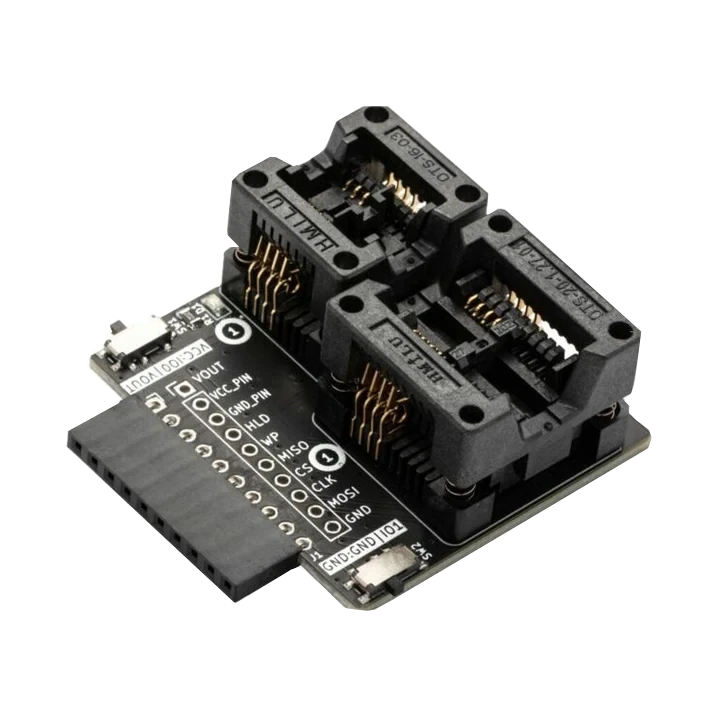

Many SPI flash chips are 3.3 V, but some board-level targets use 1.8 V. Verify before connecting.
Memory and firmware target
SPI NOR flash reading and writing on ESP32
Wire SPI NOR flash to ESP32 or ESP32-S3 and use ESP32 Bit Pirate to open the dedicated SPI flash shell for JEDEC probe, analysis, read bytes, dump, search strings and controlled erase/write actions.
Start here when connecting SPI NOR flash chips to ESP32 for the dedicated flash shell: Probe Flash, Analyze Flash, Read bytes, Dump Flash, search strings and back up the chip before any write or erase action.
- flash shell
- JEDEC
- analyze
- SPI

reading and writing
Start with SPI NOR JEDEC and backup
Confirm the flash voltage, package and SPI pinout before power-up. Probe the JEDEC ID first, then read bytes or create a full dump before any erase or write action.
- 01
Identify the flash voltage, package and pinout before connecting anything.
- 02
Connect common ground, CS, CLK, MISO and MOSI with the correct target-side voltage.
- 03
Open the dedicated
flashshell and start with Probe Flash before write or erase actions. - 04
Use Analyze Flash, Search string, Extract strings, Read bytes or Dump Flash from the shell before modifying memory.
- 05
Use browser tools or recipes when you need a repeatable saved backup.
Example CLI flow
mode spi
config
flash # open the SPI NOR flash shellUse this as a reading and writing preview. Inside the Flash shell, start with Probe Flash and Analyze Flash, then use Read bytes or Dump Flash before any write or erase action.
hardware reminders
SPI NOR flash wiring notes before power
Confirm CS, CLK, IO0/IO1, chip voltage and whether another controller is still holding the SPI flash bus.
Wiring View
A target CPU can hold lines or power the chip unexpectedly; isolate or control the board when needed.
Keep pages read-only until you have a verified backup and know the erase block layout.
Before wiring a module or target chip, check pinout, voltage, ground reference and whether the selected ESP32-S3 board has the required pins free.
task-level guides
Detailed SPI NOR flash chip recipes
Use these SPI NOR guides for JEDEC identification, browser backups, dump analysis and cautious erase/write work.
Read SPI flash JEDEC ID
Task-level guide with wiring, commands and troubleshooting steps.
Dump SPI flash in the browserTask-level guide with wiring, commands and troubleshooting steps.
Analyze SPI flash from CLITask-level guide with wiring, commands and troubleshooting steps.
Dump SPI EEPROM 25xTask-level guide with wiring, commands and troubleshooting steps.
Choose a USB adapter modeTask-level guide with wiring, commands and troubleshooting steps.
what it is
What SPI NOR flash is used for
SPI NOR flash chips store bootloaders, firmware images, configuration data and embedded filesystem content on many boards and devices.
practical value
Why use SPI NOR flash with ESP32 Bit Pirate
ESP32 Bit Pirate can help confirm wiring, open the dedicated SPI Flash shell, probe JEDEC information, analyze content, read bytes, dump flash and route saved-backup paths to browser tools such as the Web SPI Flash Programmer.
common symptoms
Common problems with SPI NOR flash chip
SPI NOR failures usually come from CS/MISO/MOSI wiring, wrong voltage, another controller holding the bus, or noisy clips/cables.
JEDEC returns FF FF FF
Check CS, MISO/MOSI order, power, ground, voltage and whether the chip is held by another controller.
JEDEC returns 00 00 00
Look for missing power, shorted lines or the target board holding the bus.
Dump changes between reads
Reduce cable length, lower speed, confirm common ground and check level translation.
pages
Useful SPI NOR flash next pages
Use these links for SPI NOR probing, JEDEC reads, browser backups, flash analysis and board/hardware notes.
SPI
SPI reference for flash wiring, chip select, JEDEC reads and bus troubleshooting.
USB adaptersProtocol overview for USB adapter modes.
ESP32-S3 DevKitBoard-specific notes for using SPI NOR flash chip with ESP32 Bit Pirate.
CardputerBoard-specific notes for using SPI NOR flash chip with ESP32 Bit Pirate.
Probe SPI flash JEDEC IDUse identification before shell reads, dumps, writes or erases.
Back up SPI flash in browserUse the web tool when you need a saved flash image.
Analyze SPI flash from CLIInspect a backup after shell or browser capture.
SPI Flash ProgrammerUse the browser programmer for SPI NOR backups and cautious write or erase tasks.
Logic AnalyzerCapture SPI flash traffic when wiring or timing looks suspicious.
Web Serial TerminalUse Web Serial for flash shell probes, JEDEC reads and dump commands.
Hardware ecosystemDock, adapters, level notes and physical hardware context.
module-specific answers
SPI NOR flash chip FAQ
Quick answers about SPI NOR JEDEC reads, dumps, voltage, wiring and safe erase/write checks.
Can ESP32 Bit Pirate dump SPI NOR flash?
Yes. Open the SPI flash shell, run Probe Flash first, then use Read bytes or Dump Flash when the wiring and voltage are correct.
Should I write before reading?
No. Use Probe Flash and Analyze Flash first, create a backup with Read bytes or Dump Flash, then only write or erase when you know the target and have a verified backup.
Should I read before writing?
Start with the firmware flash shell: Probe Flash, Analyze Flash, then Read bytes or Dump Flash before any write or erase action.
Why does the flash only return FF?
Most often the chip is not selected, MISO is not connected, the voltage is wrong, or another controller is holding the bus.
Which board is best?
A generic ESP32-S3 DevKit or Dock-style hardware is usually easiest because the SPI pins are accessible.

project
SPI NOR flash inside ESP32 Bit Pirate.
The SPI NOR flash page connects SPI wiring, JEDEC reads, browser backups, dump analysis, safe erase/write recipes and board notes.